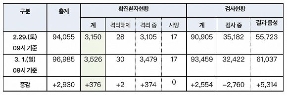

韩国累计确诊新冠肺炎超3000例，新天地总会长遭举报
原文链接 备份链接 图片来源：Kyotonews “ 韩国新天地受害者团体宣布将以违反《传染病预防法》和《特定经济犯罪加重处罚法》对新天地总会长李万熙提起指控。 ” 韩国中央防疫对策本部2月29日通报称，截至当天下午4时，韩国较当天上午9 …

图片来源：Yonhap
“
截至目前，除确诊患者外，韩国接受病毒检测的人数累计93459人，有61037人的检测结果呈阴性，其余32422人的结果还未出炉。
”
韩国中央防疫对策本部3月1日通报，截至当天上午9时，韩国较昨日新增376例新冠病毒感染病例，24小时新增595例，累计确诊3526例，死亡17例，治愈增至30例。
截至目前，除确诊患者外，韩国接受病毒检测的人数累计93459人，有61037人的检测结果呈阴性，其余32422人的结果还未出炉。

来源：韩国中央防疫对策本部
韩国新冠肺炎确诊病例26日超过1000例，仅时隔三天便突破3000例。自上月20日境内首次出现确诊病例以来已过40天。
目前，韩国近九成（87.4%）确诊病例集中在大邱和庆北这两个相邻地区，分别有两个主要的传染发生地：新天地大邱教会和庆北清道郡大南医院。
据韩联社29日报道，新天地大邱教会信徒9000多人中，约三分之一的标本采集工作已经完成，其中，针对有症状待查人员1300多人的病毒检测已经完毕，确诊病例预计还将不断增加。
截至29日上午9时，与新天地大邱教会相关的确诊病例共1557例（53.1%）。此外，截至1日上午9时，大邱累计确诊病例2569例，庆北确诊病例514例，分别新增333例和26例，京畿道、首尔和釜山市也已分别累计确诊84例、82例和81例。
截至目前，韩国死亡病例有17例。第17例死亡病例为77岁男性，23日住院后，25日被确诊，29日上午不治，患有糖尿病和帕金森症。
在其余16例死亡病例中，分别有7例和4例与清道郡大南医院和新天地教会有关，此外，还有3例暂未报告与上述两地有关的死亡病例出现在大邱，庆北和京畿道也各出现1例。
治愈并解除隔离病例则有28例。第25例病例重新被确诊，成为境内首例治愈后再次被确诊的病例。该病例为74岁女性，本月9日被确诊后接受治疗，22日治愈出院，之后重新出现相关症状并于28日被再次确诊。
韩国中央灾难安全对策本部第一总括协调官金刚立29日已表示，预计本周末将是疫情是否会进一步升级的关键时刻，呼吁民众尽量避免外出，暂停参与宗教活动和集会等聚集性活动。但他也指出，前往筛查诊所接受检测的大邱市民被确诊的比例远远低于新天地信徒。
据韩国外交部3月1日消息，截至当天上午5时，因疫情针对韩国采取入境管制措施的国家和地区增至78个。全球有35个国家和地区对韩国采取全面或部分禁止入境措施，较前一天新增2个国家。加大对从韩国入境人员的检疫力度的国家和地区则从前一天的42个增至43个。
尽管国内疫情形势严峻，但截至目前韩国尚未因此在食材供应方面出现问题。据韩联社1日报道，这可能与韩国餐饮业2019年第四季度采购的大部分蔬菜和肉类的国产比重高于自华进口比重有关。
据韩国农业观测本部26日发布的数据，在调查的330家餐厅所使用的13种蔬菜中，有11种韩国出产比例高于中国，白菜、萝卜、大葱、卷心菜的国产比例超过90%。仅有剥皮洋葱和辣白菜的中国产比例分别达到87.4%和55%，但35.5%采购中国产辣白菜的餐厅预测中国产比例将逐步降低，比认为比例将升高的餐厅（30.7%）多。
肉类方面，这些餐厅除牛肉以外的绝大部分畜产品的国产比例超过70%，猪肉、鸡肉、鸭肉的比例分别达到66.9%、85.8%、96.7%。韩国农林畜产食品部表示，尽管中国正受疫情影响，但农副产品总体上仍然货源充足，供应稳定。
业内人士表示，原产地追溯制度扎根后，餐厅的国产食材采购比例变高，但若疫情持续较久，辣白菜以外品类的供应可能因此受到影响。

原文链接 备份链接 图片来源：Kyotonews “ 韩国新天地受害者团体宣布将以违反《传染病预防法》和《特定经济犯罪加重处罚法》对新天地总会长李万熙提起指控。 ” 韩国中央防疫对策本部2月29日通报称，截至当天下午4时，韩国较当天上午9 …
原文链接 备份链接 图片来源：Yonhap “ 《东亚日报》指出，截至27日上午，加上民间医疗机构，韩国总共仅有1077张负压病床，已远少于确诊病例人数。 ” 韩国中央防疫对策本部2月28日通报，截至当天上午9时，韩国较昨日新增256例新 …
原文链接 备份链接 韩国青瓦台。图片来源：维基百科 记者 ：肖恩 “ 韩国已累计确诊204新冠肺炎病例，是海外病例第二多的国家，仅次于邻国日本。 ” 在教会和军队相继出现新型冠状病毒肺炎感染病例后，十几名来自韩国总统府青瓦台的警卫也因为曾 …
原文链接 备份链接 摘要：刘永辉在韩国岭南大学读博。学校所在地大邱是韩国新型冠状病毒肺炎疫情最严重的地区，2月28日下午（截至当地时间16时），大邱累计确诊1579例新冠肺炎病例，占韩国总数的67.6%，仅仅过了一个晚上，到当地时间2 …
原文链接 备份链接 从1月13日中国境外出现首例新冠肺炎确诊病例，到2月末病毒登陆六个大洲，新冠疫情已经席卷了除南极洲外地球上的所有大洲。 截至3月2日，在中国以外，已有61个国家累计向世卫组织报告了8739例病例，其中已有127例死亡病 …